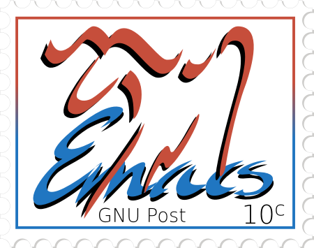
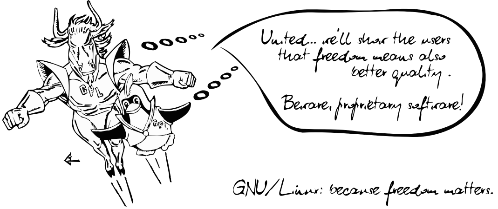
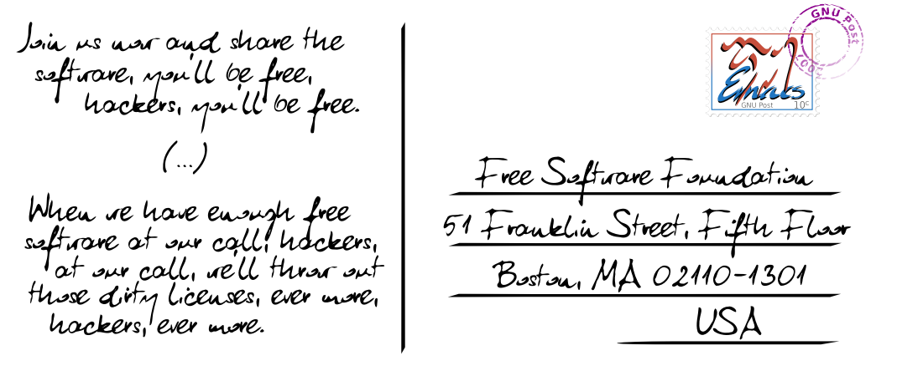

Timbres GNU
Ci-dessous quelques jolis timbres-poste, par Tomasz W. Kozłowski.
timbre « GNU alternatif » (SVG)

FSF Airmail (SVG)

Timbre GNU Emacs (SVG)

« Free as in Freedom » (SVG)

Timbre GNU Hurd (SVG)

Cachet postal « GNU Post 2007 » (SVG)

Timbre GNU (SVG)

Timbre GPLv3 (SVG)

Carte postale GNU (larger, SVG)

Carte postale GNU (verso) (larger, SVG)

Informations de copyright
- Timbre « GNU alternatif » – disponible sous la même licence que la Tête de GNU alternative
- FSF Airmail – basé sur le logo officiel de la Free Software
Foundation créé par Li Jiang et disponible sous la GNU General
Public License, en version 2 ou toute version ultérieure
- Timbre GNU Emacs – le logo original GNU Emacs a été créé par Luis Fernandes
et vectorisé par Dmitry Dzhus. La version vectorisée du logo est publiée
sous les termes de la GNU General Public License, en version 2
ou toute version ultérieure
- Free as in Freedom – basé sur le logo GNU officiel (la Tête de
GNU) créé à l'origine par Etienne Suvasa et redessiné par Peter Garwinski ;
disponible sous la GNU General Public License
- Timbre GNU Hurd – basé sur le logo original Hurd Metafont conçu par Stephen
McCamant et disponible sous la même licence
- Cachet GNU – créé par Tomasz W. Kozłowski ; l'image est dans le domaine
public
- Timbre GNU – GNU General Public License
- Timbre GPLv3 – basé sur le bouton GPLv3 original de la FSF GPLv3 et
disponible sous les mêmes termes
- Carte postale GNU – basée sur la version vectorisée de l'image « Le duo
dynamique : le Gnou et le Manchot en vol », créée à l'origine par Victor
Siame et publiée sous licence Art libre
- Carte postale GNU (verso) – créée par Tomasz ; les éléments sont triviaux et
elle tomberait dans le domaine public, si ce n'est qu'elle intègre l'image
GNU Emacs sous GPL. Elle est donc distribuée comme un tout sous GNU
General Public License, en version 2 ou toute version ultérieure
{kind=link}
{kind=link}
{kind=link}
{kind=link}
{kind=link}
{kind=link}
{kind=link}
{kind=link}
{kind=link}
{kind=link}
{kind=link}
{kind=link}
{kind=link}
{kind=link}
{kind=link}